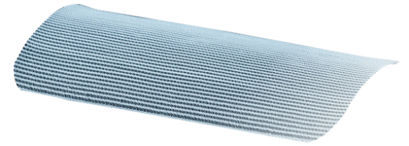

Situated outside the peritoneal cavity.
Hernia occurring in the femoral canal near the groin.
Instrument used to secure the hernia mesh in place during surgery.
Sutures used to attach the hernia mesh to surrounding tissues.
Immune response against an implanted material recognized as foreign.
A prosthetic device used to support the abdominal wall and prevent hernia recurrence.
Surgical repair of a hernia, often involving the use of mesh.
Surgical procedure to repair a hernia by stitching the defect closed.
Surgical removal of a hernia sac, typically for repair.
Breakdown of a compound due to reaction with water, affecting materials like mesh.
Hernia that occurs through a surgical incision.
Occurs when abdominal contents protrude through the inguinal canal in the lower abdominal wall.
Artery located below the epigastric region, important in hernia surgery.
Hernia that occurs in the inguinal canal, typically in the groin area.
Mesh placed within the layers of tissue at the site of the hernia defect.
Hernia repair performed using minimally invasive laparoscopic techniques.
Minimally invasive surgical technique using a camera inserted through small incisions.
A tension-free open surgery for inguinal hernia repair using mesh to reinforce the abdominal wall.
Mesh designed to be less dense for increased comfort and reduced stiffness.
Mesh with large pores to allow for better tissue integration and reduced adhesion.
The attachment of the mesh to surrounding tissues, which can be problematic.